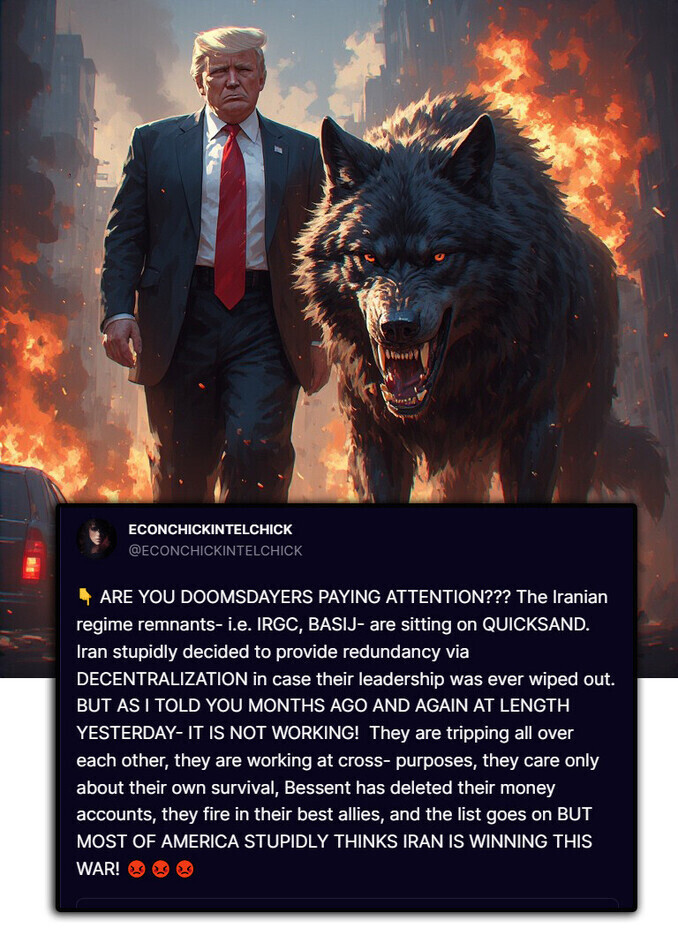
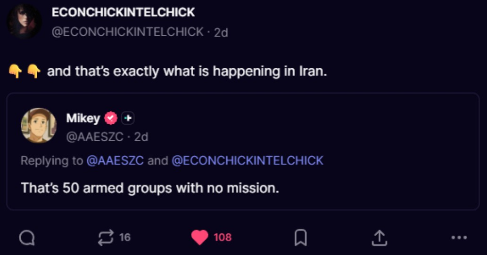
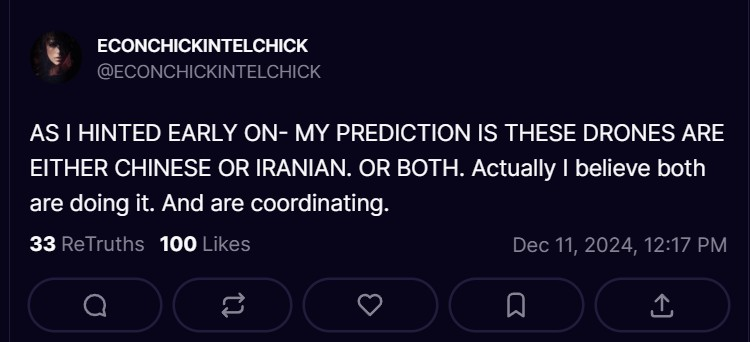

Who is ECONCHICKINTELCHICK?
@ECONCHICKINTELCHICK
Truth Social | 14,400 Followers
Her bio on Truth Social reads: "USAF used me by day in military ops and military intelligence; by night pushed me to get PhD in Econ. DIA Rep in NMCC. I'll go toe to toe with any General, CEO, President. All that background became very useful representing entire Intel Community as a DIA Rep in National Military Command Center, the nerve center of Pentagon."
The National Military Command Center is the nerve center of the Pentagon. It is the operational hub where the Secretary of Defense and the Chairman of the Joint Chiefs of Staff receive real-time information, make decisions, and issue orders during the most critical moments in national security. It is where nuclear war is controlled from. As she put it in a March 18, 2026 post: "Would you like me to teach you why the NMCC where I represented the entire Intelligence Community, and where nuclear war is controlled from, was called THE COOLEST PLACE TRUMP SAID HE'D EVER SEEN?" A DIA Representative in the NMCC is not a desk analyst reading reports. It is the person who represents the Defense Intelligence Agency's analytical capabilities directly to the highest levels of military command in real time during active operations.
She served in Iraq. She has a PhD in Economics. She has been educating the public on Truth Social since February 2022, covering Iran, China, Russia, Ukraine, continuity of government, grifter debunking, and geopolitical analysis. She was calling out devolution as fake as far back as July 2022, writing: "Nope. This is not Devolution. I was officially involved in COG (Continuity of Government) activities and planning so what the hell would I know. I'm sure some paper boy turned blue check MAGA Grifter could explain it better." That was four years ago, when most people had never heard of this site and Jon Herold was still collecting subscribers.
She has 14,400 followers on Truth Social. Derek Johnson has 110,000. Dave Fishman has 810,000. The numbers are smaller because her audience is not looking for entertainment or hopium. They are looking for accurate analysis from someone who has actually done this work at the highest levels of the U.S. intelligence apparatus. She does not charge for subscriptions, does not sell merchandise, and does not monetize predictions. She gives it away for free because she believes the public deserves accurate information from someone qualified to provide it.
She Has Been Right for Years
Chapter 14 is not just about the last few weeks of Iran coverage. ECON has been providing real intelligence analysis on Truth Social for over four years. Here is the range of what she covers and has covered, all verifiable through her profile search function:
- Iran (2024-2026): Tracked the regime collapse, IRGC fracturing, secret negotiations, and capitulation in real time, consistently ahead of Fox News, Newsmax, and every mainstream outlet.
- Devolution (July 2022): Debunked devolution as fake four years ago from a position of having actually worked in COG planning. Called out the grifters promoting it.
- China: Analyzes Chinese economic warfare, the Strait of Hormuz implications, and the collapse of Iran's last remaining allies including China and Russia.
- Grifters: Calls out Joe Kent, Emerald Robinson, and other accounts repeating Iranian regime propaganda. Has been blocked by many of them because she exposes their ignorance.
- Ukraine/Russia: Pinned a four-part thread on the one-year anniversary of the Ukraine invasion with comprehensive analysis.
- COG/COOP: Has professional experience in Continuity of Government planning, which is why she knew immediately that devolution theory was nonsense.
- Economic analysis: PhD in Economics allows her to analyze sanctions, currency impacts, energy policy, and financial warfare in ways that no other Truth Social account can match.
The Iran Situation: Real-Time Intelligence Analysis

ECONCHICKINTELCHICK has been analyzing the Iran situation with a level of detail and accuracy that no conspiracy theorist and very few mainstream analysts can match. Here is the timeline of what she told her followers, with specific dates, compiled from her Truth Social feed:
| Date | What She Said | Engagement |
|---|---|---|
| 2022: Debunking Grifters From Day One | ||
| Jul 10, 2022 | "Nope. This is not Devolution. I was officially involved in COG (Continuity of Government) activities and planning so what the hell would I know. I'm sure some paper boy turned blue check MAGA Grifter could explain it better." Called out devolution as fake four years before this site existed. | 23 likes |
| Sep 7, 2022 | Called out a grifter named Cates for lying about military units and COG: "He proceeds to lie about COG, then he sells T-shirts because ultimately it's about scamming vulnerable people to make money." | 15 likes |
| Nov 17, 2022 | "I posted many times that I did COG at the highest level, including White House level, and I knew PP [Patel Patriot] didn't know what he was talking about. I was proven right but this cycle gets replayed over and over where people continue to listen to people with no expertise." | |
| 2023: Ukraine, Derek Johnson, and Real Intelligence | ||
| Feb 28, 2023 | Published a 4-part thread on the One Year Anniversary of the Russia-Ukraine War with comprehensive analysis. Her pinned post to this day. | 135 likes, 24 reshares |
| Jun 12, 2023 | "He has no idea what he's talking about. Unlike Derek Johnson, I worked COG at the absolute highest level. I also represented the entire Intelligence Community in crises while working in the nerve center of the Pentagon. Folks, you have GOT to learn to vet these Grifters." | 44 likes, 12 reshares |
| 2024: COG Truth and Early Iran Tracking | ||
| Mar 6, 2024 | "There will be no military occupation and no Continuity of Government (COG) take over. I worked at levels so high on COG that anything I say could land me in jail. But I will tell you this much: most people involved are Patriots first and foremost." | 75 likes, 27 reshares |
| May 30, 2024 | "Kash Patel just said he's talking with 2 members of Congress about them sending a subpoena to Judge's daughter who making millions off this farce. TIME TO TAKE THE GLOVES OFF." | 243 likes, 81 reshares |
| Aug 1, 2024 | Analyzed Netanyahu's strike on Tehran: "Looks to me like you guys have them totally on the Defense." Directly messaged Iranian contacts about the regime's weakening posture. | |
| Feb 2026: Still Fighting the DC Establishment | ||
| Feb 25, 2026 | "Yesterday was the 4th Anniversary of the Russia-Ukraine War. I was kicked off Twitter and on Gab when Russia invaded. From that day onward I fought with the entire DC establishment about their assessment of the war and proven correct." | |
| June 2025: Israeli Operations Begin | ||
| Jun 12, 2025 | "ISRAELI JETS ARE FLYING CAREFREE AND AT LOW LEVEL OVER TEHRAN. OMG, this is a spectacular operation." | 105 likes, 27 reshares |
| Jun 17, 2025 | "The highways out of Tehran are completely clogged with cars, the way our Interstates look when residents are fleeing a hurricane. Iranian civilians heeded Trump's warning for them to evacuate Tehran." | 124 likes, 18 reshares |
| March 2026: The Collapse Accelerates | ||
| Mar 2, 2026 | "Tehran is about to get hit hard. Civilians there are urged to leave." She warned BEFORE the strikes happened. | 233 likes, 49 reshares |
| Mar 4, 2026 | "PLEASE MAKE THIS GO VIRAL. IRANIAN WOMAN IN TEHRAN DEFENDS TRUMP AND ISRAEL. YOU WILL BE RIVETED." | 184 likes, 82 reshares |
| Mar 8, 2026 | "Local fuel depots in Tehran that were helping the regime. Perfect symbolism for the REGIME BURNING IN HELL." Shared Energy Secretary Chris Wright confirming: "The U.S. is targeting zero energy infrastructure." | |
| Mar 17, 2026 | "BREAKING NEWS! They got the top Iranian BASIJ COMMANDER. The Basij are the biggest thugs of all the Iranian thugs." | 122 likes, 26 reshares |
| Mar 17, 2026 | "This sent shock waves throughout all of IRGC, who isn't getting paid. Of course there's fracturing among IRGC." | 132 likes, 28 reshares |
| Mar 18, 2026 | "The IRGC is indeed being fractured. You just never see it on CNN." Also: "Kilmeade just said the Israelis are calling up IRGC and other thugs and telling them to take a side now." | |
| Mar 18, 2026 | "I personally believe that will be in about 2 weeks when Iranian people told to come out of shelters." | 144 likes, 31 reshares |
| Mar 19, 2026 | "BREAKING NEWS! JAPAN JUST CONFIRMED ONE MINUTE AGO THEY WILL ASSIST US IN THE WAR WITH IRAN. Minesweepers likely to be biggest contribution. But also economically." | 318 likes, 100 reshares |
| Mar 19, 2026 | "Why the Qatar issue is such a big deal. Iran continues to crash and burn, with almost no allies left on the globe. The 2 left, Russia and China, can do little to help Iran." | |
| Late March 2026: Capitulation and Negotiations | ||
| Mar 23, 2026 | "IRAN: MAJOR AMOUNT OF PROGRESS BEHIND THE SCENES." Also: "VERY SIGNIFICANT EVENTS UNDERWAY WITH IRAN NOW. IGNORE IRANIAN STATE NEWS." | 285 likes, 80 reshares |
| Mar 23, 2026 | "THEY HAVE AGREED TO ALL 15 POINTS TRUMP HAS BEEN NEGOTIATING WITH THEM. ALL 15!" | |
| Mar 23, 2026 | "WE ARE TALKING WITH THE 'REAL' POWERFUL LEADER LEFT IN IRAN THAT WAS NOT PART OF SICK RADICAL REGIME. TRUMP IS PROTECTING HIS IDENTITY SO HE'S NOT KILLED." | |
| Mar 23, 2026 | "The GRIFTERS WITH BIG ACCOUNTS ON HERE TAKE DAYS AND WEEKS BEFORE THEY CATCH ON. I just gave you the update IN REAL TIME." | 107 likes |
| Mar 24, 2026 | "The press TODAY is finally reporting everything I talked about regarding Iran negotiations yesterday." She was 24 hours ahead of mainstream media. | 141 likes |
| Mar 24, 2026 | "Wide scale wave hits IRGC HQ in Tehran!" | 132 likes, 28 reshares |
| Mar 25, 2026 | "THE GIFT IRAN GAVE TO TRUMP TODAY? IRAN WAS FORCED TO ADMIT THAT THEY WERE INDEED IN TALKS WITH TRUMP." The negotiators proved authority by permitting a non-hostile ship through the Strait of Hormuz. | 307 likes, 116 reshares |
| Mar 25, 2026 | "They keep trying to suppress me because I'm way out ahead on the Iran story, likely pro regime bots straight out of an Iranian bot farm." Follower @SunyAlaska: "Total bot attack now. Blocked 14." | 112 likes |
| Mar 26, 2026 | "LTG McMaster is currently on Fox raving about the success of Trump's Iran operation. So fun to watch Trump's former detractors compliment him." | 151 likes, 17 reshares |
| Mar 27, 2026 | "A Chinese ship had to turn back from the Strait of Hormuz DESPITE THEIR IRANIAN ALLIES ASSURING THEIR SAFE PASSAGE. Remember how I said IRGC forces are completely collapsing? This is an example. HUGE one." | |
| Mar 27, 2026 | "MOSSAD, CIA, and others are taking BIG advantage of the paranoia spreading throughout IRGC and BASIJ." | |
| Mar 27, 2026 | "The only topic I have time for is Iran. But yes, the gold is still at Fort Knox." Debunking conspiracy theories while staying focused on the real story. | |
| Mar 27, 2026 | "Trump has now secured the American dollar for generations to come." The panicans are too uninformed to understand what just happened. | |
| Mar 27, 2026 | "Proof (on video below) of things going haywire in Iran." Posted video evidence while cable news was still running panel discussions about whether negotiations were real. | 130 likes, 23 reshares |
| Mar 25, 2026 | "General Spalding just got on Newsmax and said there is no negotiation with Iran. This particular General is dumber than dirt. I GUARANTEE Trump is negotiating with a key Iranian figure inside Iran. And he is agreeing to all of Trump's demands. Not one person in the press gets it. Not one." Three days later, Iran publicly confirmed the negotiations. | 213 likes, 49 reshares |
| Mar 27, 2026 | "BREAKING! Iran-backed HACKERS BREACHED the email of FBI Director, Kash Patel. I have tried telling people for 15 years that coming from the hi-tech world that I CAN TELL YOU THAT YOU CANNOT GET AHEAD OF CHINESE AND IRANIAN HACKERS. You just can't. They are 5 steps ahead. ANYTHING OF TRUE VALUE needs to be communicated old school. Including paper over digital." | 185 likes, 68 reshares |
The Iranian Regime Is Collapsing From Within
She has been stating for months that the Iranian regime remnants, specifically the IRGC (Islamic Revolutionary Guard Corps) and BASIJ (paramilitary militia), are sitting on quicksand. Iran made a strategic decision to decentralize their command structure to provide redundancy in case their leadership was wiped out. Her analysis: it is not working. The decentralized elements are tripping all over each other, working at cross-purposes, caring only about their own survival. They are firing on their best allies and cutting deals to save themselves. The result is not a resilient command structure. It is chaos.
On March 23, 2026, she posted "VERY SIGNIFICANT EVENTS UNDERWAY WITH IRAN NOW. IGNORE IRANIAN STATE NEWS." That post received 285 likes and 80 reshares. Within 24 hours, the press began reporting what she had already told her followers. On March 25, she stated "THIS WAS A MAJOR CAPITULATION BY IRAN TODAY" after Iran was forced to publicly admit they were in talks with Trump. She explained that the people Trump was negotiating with proved they had the authority to speak for Iran by publicly announcing that a non-hostile ship could transit the Strait of Hormuz, which it did. This is how you verify that you are negotiating with the right person in a collapsed command structure.
She also identified that MOSSAD, CIA, and other intelligence services are taking advantage of the paranoia spreading through IRGC and BASIJ. This is not speculation. This is what intelligence agencies do when a hostile regime's internal cohesion breaks down. You amplify the confusion. You exploit the distrust. You turn factions against each other. She knows this because she has been part of this kind of work.
On March 26, she shared testimony from an actual Iranian citizen inside Iran (@ItsDecado on X) who addressed Western pacifists directly: "Everything you are so terrified of happening in a war is literally just the 47-year daily history of the Islamic Republic occupying my homeland. You are not describing the horrors of a military strike; you are describing the baseline reality of our lives under these terrorists." She shared this to show that the people living under the regime want liberation, not preservation of the status quo.
She also retruthed analysis from @AAESCZ who stated "That's 50 armed groups with no mission," referring to the fragmented IRGC elements operating without central coordination. Her response: "and that's exactly what is happening in Iran." When armed groups lose their mission, they do not become peaceful. They become warlords. History does not have a single example of that ending differently.

Real-time collaborative analysis on Truth Social. @AAESZC identifies 50 armed groups with no mission. ECON confirms.
The Financial Dimension
She noted that Treasury Secretary Bessent deleted Iran's money accounts. This is economic warfare operating in parallel with military operations, the kind of multi-domain strategy that her PhD in Economics and her military intelligence background uniquely qualify her to analyze. When she connects military operations to economic consequences, she is drawing on both her USAF intelligence career and her academic expertise. Most analysts can do one or the other. She does both.
The numbers tell the story. The Iranian rial has collapsed to nearly 1.4 million per dollar. Inflation has surpassed 52 percent. Basic goods have become unaffordable for ordinary Iranians. When an economy collapses at this rate, the security forces that depend on government paychecks start asking why they should risk their lives for a regime that cannot pay them. This is the financial dimension of regime collapse that ECON has been tracking.
She pointed out that the conspiracy theorists who talk about "the storm" and "military tribunals" have completely missed the actual financial warfare happening right now. The real operation is not secret. It is playing out in currency markets, sanctions enforcement, and frozen accounts. It just requires the knowledge to see it, which the grifters do not have.
On March 27, she told her followers that Trump has "secured the American dollar for generations to come." This is the economic endgame she has been describing. When Iran's economy collapses and their energy infrastructure is compromised, it reshapes global energy markets in ways that strengthen the dollar's position as the world's reserve currency. Her PhD in Economics allows her to connect these dots in ways that military-only analysts cannot.
"The Most Monumental Thing Since the Fall of the Soviet Union"
This is not hyperbole from a clickbait creator trying to generate views. This is an assessment from someone who represented the entire intelligence community in the nerve center of the Pentagon. When she says the Iran situation is the most significant geopolitical event since the Soviet Union collapsed, she is making a calibrated judgment based on decades of intelligence analysis experience.
Consider the parallels she is drawing. The Soviet Union collapsed because its economic system could no longer sustain its military commitments and its internal security apparatus. The same pattern is happening in Iran right now. The currency has collapsed. The military infrastructure has been degraded by Israeli strikes. The internal security forces are fragmenting. The population is in open revolt across all 31 provinces. The regime's only remaining tool is bot farms on social media. When your last weapon is an internet troll army, your regime is already over.
The conspiracy theorists call everything "the storm" and "the great awakening." ECONCHICKINTELCHICK identifies the actual historic event happening in real time and explains why it matters using the analytical frameworks she learned at the DIA and refined over decades of intelligence work.
The Administration Is Delivering
She has highlighted that administration officials are doing "literally impossible work" and succeeding. She specifically named Noem, Bondi, and Tulsi as the top three performers, noting they were given impossible tasks and are getting them done.
She explained that Tulsi Gabbard was absent from a recent cabinet meeting not because of dysfunction but because the Director of National Intelligence was swamped with the Iran situation and Congressional oversight demands and could not afford two hours away from her backlog. This is the kind of context that mainstream media does not provide and conspiracy media cannot provide. When a cabinet member misses a meeting, the press speculates about infighting. Someone who understands how government works at the operational level knows that the DNI during an active military operation does not have time for photo opportunities.
She described Trump's March 23 press event before boarding Air Force One as comprehensive, saying "ALL of this was explained at length." Then she added the critical observation: "The GRIFTERS WITH BIG ACCOUNTS ON HERE TAKE DAYS AND WEEKS BEFORE THEY CATCH ON. I just gave you the update IN REAL TIME." This is the fundamental difference. She is providing real-time intelligence analysis. The grifters are providing late, distorted interpretations of events they do not understand.
After Trump's cabinet meeting on March 27, she posted something unusual for someone with her background: "Can I tell you a secret? After his Cabinet meeting today where so much was updated, I'm actually giddy. Which we military folks never get." When someone who has spent their career in the most serious environments in the national security apparatus says they are giddy, pay attention. Something significant happened in that cabinet meeting.
The 3D Chessboard
When she says "3D chessboard," she is not speaking in metaphors. She is describing multi-domain strategy where military operations, energy policy, economic warfare, diplomatic negotiations, and intelligence operations all happen simultaneously and each move affects every other board. Most analysts can see one board. The media can barely see one dimension of one board. She sees all of them because her background spans military operations, military intelligence, economics, and the NMCC where all of these domains converge in real time.
Here is an example. On March 17, 2026, she explained why the U.S. is allowing Iranian oil to continue flowing even while conducting military operations against the regime: "China is a nuclear power and we don't want to provoke them right. If we cut them off, their economy collapses, ours does too, so they do something irrational and WWIII starts." She assessed that the U.S. likely has a handshake agreement with China that as long as the oil keeps flowing, China will not interfere with regime change in Tehran. But the oil revenue also funds the 150,000 troops and domestic police forces loyal to the regime, which makes the ultimate goal of regime change more difficult. That is five domains in one analysis: military (operations against Iran), energy (oil flow through Kharg Island), economics (Chinese and American market interdependence), diplomacy (handshake agreement with Beijing), and intelligence (understanding the regime's internal funding structure). Most pundits on television cannot even explain one of these dimensions accurately. She connected all five in a single post.
On March 27, she made it explicit: "China was given a tongue lashing by Trump weeks ago over 2 Chinese, brother and sister, who planted an IED at MacDill AFB. That was just made public yesterday. As I keep saying, ignore the entire press, including our friendly media, because there's so much they don't know about this 3D Chessboard Trump is controlling, and they are ALL too stupid to even explain the 1D part they DO know about." She followed it with: "This is the most monumental thing since the fall of the Soviet Union. There ARE good sources out there. But very few with the entire chessboard."
The NJ Drones: Called It Before Anyone Else
In December 2024, mysterious drones appeared over New Jersey, flying over military installations and critical infrastructure. The media panicked. Social media exploded with theories. The government initially downplayed it. Karoline Leavitt said in her first briefing that they were all FAA-approved hobbyist drones. ECON knew immediately that was not true.
On December 11, 2024, she posted: "NONE OF YOU CAN FIGURE OUT WHAT THE HELL IS TERRORIZING NJ WITH DRONES YET YOU THINK BITCOIN HAS NO BAD ACTORS. HINT: IT IS THE SAME PEOPLE." She also warned that she would be limiting her drone comments because "China and Iran hang on every word I type on here. They also completely monitor every word of other accounts." She understood that her analysis itself was being monitored by the adversaries she was analyzing.
On March 20, 2025, she confirmed: "I TOLD ALL OF YOU THAT THOSE WERE CHINESE AI DRONES. IN TRUMP'S FIRST WEEK HE ASKED THE MOST KNOWLEDGEABLE BUREAUCRAT TO UPDATE HIM. HE RELAYED THAT UPDATE TO THE PUBLIC, WHICH IS THAT DON'T WORRY, IT WAS ALL NORMAL HOBBYISTS. BELOW IS THE HEAD OF NORAD AGREEING WITH EVERYTHING I SAID." The head of NORAD confirmed what she had been telling her 14,400 followers months earlier while the government was still publicly calling them hobbyist drones.
On March 28, 2026, she reported the drones are back: "The strange Drones like those over New Jersey are back. This time over a B-52 base. We couldn't take them down." The pattern she identified in December 2024, Chinese AI drones conducting intelligence gathering over American military installations, is still active over a year later. She saw it first. NORAD confirmed it. And the conspiracy industry was busy selling devolution theories while a real intelligence threat was flying over American military bases.

ECON's March 28, 2026 post explaining the Chinese-Iranian AI drone program over American military bases.
On March 28, 2026, she dug up her original analysis and laid it out again: "This had been happening for months under Joe Biden in 2024 and I explained they were Chinese or Iranian (they have a joint program). The reason we couldn't take them down is they were more sophisticated than any technology WE had. I said they had to be AI Propelled which explained why our military said they couldn't intercept any signal." Her December 11, 2024 assessment was specific: "MY PREDICTION IS THESE DRONES ARE EITHER CHINESE OR IRANIAN. OR BOTH. Actually I believe both are doing it. And are coordinating." On March 3, 2026, she confirmed: "Remember when I told you folks drones over NJ were Chinese-Iranian? They worked closely on drones."
She directs her followers to General Blaine Holt on Newsmax and General Jack Keane on Fox as sources who are "superior to all the rest by orders of magnitude." These are retired generals with actual operational experience providing analysis grounded in reality, not YouTubers reading Q drops and speculating about military tribunals.
Her frustration with the information landscape is palpable. She posted on March 27: "I don't want to leave you guys but I'm not getting economies of scale here. Not talking about for me, no one knows my name, and I don't let money get anywhere near this account. But on Twitter I could reach my 72,000 followers who could spread out and pass on this accurate information. I stay here out of loyalty to Trump but I reach only about 500 people." She has 14,400 followers but her algorithmic reach is limited. She stays not because it benefits her financially but because she believes the platform matters.
She asked her followers to "PLEASE EVERYONE, HELP DISSEMINATE WHAT I'M TELLING YOU IS HAPPENING IN IRAN. We need to be a team here." This is not a grifter building a brand. This is someone who genuinely wants accurate information to reach more people and is frustrated that the conspiracy industry with its massive platforms drowns out legitimate analysis.
Iranian Bot Farms and Information Warfare
On March 25, she identified a specific information warfare operation: "IT'S IRANIAN BOT FARMS SUFFOCATING X. IT'S THE ONLY POWER IRAN HAS LEFT." This is a critical insight. When a regime loses its military capability, its economic leverage, and its internal security forces, the last tool it has is disinformation. Iran is flooding X (formerly Twitter) with bot accounts to control the narrative about what is happening inside their country.
Official sources confirm this at scale. The IRGC's special intelligence unit and the Ministry of Intelligence (MOIS) operate tens of thousands of fake social media accounts across Twitter, Facebook, Instagram, and Telegram. According to the National Council of Resistance of Iran, many of these accounts pose as opposition figures, appearing to oppose the regime while actually serving its objectives. Examinations of prominent X threads from December 2025 to January 2026 showed that in discussions exceeding 500 replies, roughly 85 percent of comments attacked skeptics, with about 35 percent using profanity and threats. Researchers identified "the fingerprints of orchestration: echoed phrasing, faceless accounts, and relentless pacing."
The Soufan Center (March 17, 2026) confirmed that cyber operations are now Iran's primary asymmetric leverage. Palo Alto Networks Unit 42 documented that within hours of Operation Epic Fury beginning, over 60 pro-Iranian hacktivist groups mobilized. PolitiFact (March 23, 2026) published a comprehensive guide on how Iran conducts influence operations. NewsGuard identified 18 false war-related claims by Iranian outlets in a single two-week period, compared to five in the two prior weeks.
IRGC commander Gen. Hossein Salami publicly stated to officers that "cyberspace is the new battlefield." Rouhollah Momen-Nasab, Secretary General of the Islamic Revolutionary Front in Cyberspace, admitted in an interview to creating "fake accounts in the name of prominent dissidents" for "psychological operations." These are not conspiracy theories about bot farms. These are admissions from the people running the operations.
She told her followers to monitor the press closely, "especially in the morning," because that is when Iranian state media pushes its narratives. Euronews confirmed (March 6, 2026) that Iran's state media has ramped up its disinformation campaign during the conflict. Understanding the timing of disinformation campaigns is something you learn in military intelligence, not from watching YouTube videos. She is teaching her followers how to recognize and filter propaganda in real time, and every piece of her analysis is backed by official reporting from CISA, the FBI, and cybersecurity firms.
China Connection
She revealed that China was given a "tongue lashing" by Trump weeks ago over two Chinese nationals, brother and sister, who planted an IED at MacDill Air Force Base. She noted this was just made public yesterday, demonstrating that she was tracking the situation before it became public knowledge. MacDill AFB is the headquarters of both U.S. Central Command and U.S. Special Operations Command. An attack on that installation is not a random act. It is a strategic provocation against the nerve centers of American military operations in the Middle East and worldwide special operations.
The official record confirms every detail. On March 26, 2026, a federal grand jury indicted Alen Zheng, 20, and Ann Mary Zheng, 27, of Land O' Lakes, Florida. According to the FBI indictment, Alen Zheng planted the device at the base's Visitor Center on March 10, 2026. A 911 call came in reporting the bomb, but base personnel did not locate it until March 16. On March 11, the day after planting the device, the siblings sold their vehicle to CarMax to cover their tracks. By March 13, Alen Zheng had fled to China. The FBI later found IED components in his home. FBI Director Kash Patel confirmed the indictment publicly.
The siblings claimed affiliation with a group calling itself the "New Weatherman Underground," modeled after the original Weather Underground, a far-left terrorist organization responsible for bombings at the U.S. Capitol, the Pentagon, and other government buildings throughout the 1970s. The FBI stated the group opposes the war in Iran and the Trump administration's immigration policies. They sent a threatening video to the Tampa Bay Times in which a person appeared in silhouette speaking through voice alteration technology.
ECON connected the dots that the mainstream press did not. This was not just a domestic terrorism case. The brother fled to China. The target was the headquarters of the commands running operations against Iran. The timing aligned with the escalation of the Iran conflict. She understood the China-Iran strategic connection because she has spent her career analyzing how adversarial nations coordinate their operations. The CSIS published analysis confirming that Iran's cyber threat landscape includes coordination with Chinese and Russian information ecosystems. When ECON says China was given a "tongue lashing," she is describing the diplomatic backchannel response to a strategic provocation that most people would dismiss as a local crime story.
The conspiracy theorists missed this entirely. They were busy arguing about devolution and military tribunals while an actual attack occurred at the headquarters of U.S. Central Command. This is the difference between people who understand how the world works and people who sell fantasies about how they wish it worked.
The Ukraine Thread
Her pinned post from February 27-28, 2023 is a four-part thread on the one-year anniversary of Ukraine. In it, she laid out how Biden and CIA Director Burns thought they could control Zelensky and Putin through secret backroom negotiations. She documented that these negotiations started among four parties before Putin went in. She noted that they almost pulled off a limited incursion yielding Putin Donbas and allowing Zelensky to stay in power, and that all parties literally signed a ceasefire at the end of March 2022. Then Boris Johnson showed up in Kyiv on April 9, 2022, and stiffened Zelensky's spine. Three days later, on April 12, Putin declared the peace talks a "dead end." It has been stalemate ever since.
Every element of her analysis has since been confirmed by official sources. David Arahamiya, Ukraine's chief negotiator at the Istanbul talks, publicly confirmed that Russia was "ready to end the war if we took neutrality," but that Johnson told Zelensky "let's just fight." Arahamiya stated that Johnson brought two messages: "Putin is a war criminal; he should be pressured, not negotiated with," and that the West would not sign any security guarantees.
Former Israeli Prime Minister Naftali Bennett, who mediated between the parties, confirmed that a ceasefire seemed possible before Western powers intervened. Former U.S. Under Secretary of State Victoria Nuland acknowledged that "it became clear to us, clear to the Brits, clear to others" that Putin's conditions included hard caps on Ukraine's military. Former German Chancellor Gerhard Schroeder, who mediated in the Istanbul talks, stated that "the Ukrainians did not agree to peace because they were not allowed to." Turkish Foreign Minister Cavusoglu told CNN that "there are those within the NATO member states that want the war to continue."
ECON posted this analysis in February 2023. The mainstream press did not fully confirm the Istanbul negotiations story until 2024, over a year later. She saw it first because she understands how diplomatic back-channels work from the inside. She was not speculating. She was applying her intelligence background to publicly available signals and drawing conclusions that took the press over twelve months to reach and verify through on-the-record interviews.
This is the pattern that repeats across every topic she covers. Iran, Ukraine, China, economic warfare. She sees the picture months before the mainstream press because she understands how the machinery of government, intelligence, and diplomacy actually operates. The grifters cannot replicate this because they have never been inside the machine.
Operational Experience
Unlike the conspiracy theorists who have never served, she casually references her actual operational experience. On March 27 she mentioned: "In Iraq I worked with some Reserve Army helo pilots (LAPD) that were meaner than shit. Great guys." This is not a credential being waved around for followers. This is a passing reference to actual service in a combat zone, the kind of offhand detail that only comes from someone who was there.
Her bio states: "USAF used me by day in military ops and military intelligence; by night pushed me to get PhD in Econ. DIA Rep in NMCC." Each element of this bio represents years of real experience. The USAF put her in military operations and military intelligence, meaning she held positions requiring clearances and access to classified information that the conspiracy theorists claim to understand but have never seen. The Air Force then pushed her toward a PhD in Economics, giving her the academic rigor to analyze the financial dimensions of geopolitical conflict. Her role as DIA Representative in the NMCC means she was the Defense Intelligence Agency's voice in the room where the President receives real-time military intelligence. She did not read about the NMCC on Wikipedia. She worked there.
Compare this to the people millions of Americans are turning to instead. Jon Herold has no military service, no intelligence training, and no government experience. Derek Johnson served 21 months in the National Guard as a 14S with no Top Secret clearance and never made it past training. Scott McKay is a former bodybuilder. Charlie Ward is a British man who claims insider knowledge of global financial resets. X22 Report is run by a computer technician from New York. None of them have ever held a clearance. None have ever worked in an operations center. None have ever been deployed to a combat zone. None have ever briefed a senior government official on anything.
Yet these are the people with hundreds of thousands of followers and paid subscription platforms. ECON has 14,400 followers and makes no money from her account. She told her followers on March 27, 2026: "I don't let money get anywhere near this account." She stays on Truth Social "out of loyalty to Trump" despite reaching only about 500 people per post when she could reach 72,000 on X. She asked her followers to help disseminate her information because she cannot do it alone.
This is the core question Chapter 14 asks the reader: why are millions of people paying money to listen to unqualified strangers sell conspiracy theories when a verified intelligence professional with decades of experience is giving away accurate, real-time analysis for free? The answer is uncomfortable. The grifters tell people what they want to hear. ECON tells people what is actually happening. And for too many Americans, the comfortable lie is more appealing than the complicated truth.
Independently Verified: Every Claim Checked Against Official Sources
This is what separates ECONCHICKINTELCHICK from every conspiracy theorist covered in this site. Every major claim she has made can be independently verified through official U.S. government sources. The grifters say "trust me." She says things you can check yourself.
| What ECON Said | Official Source Confirming It |
|---|---|
| Bessent deleted Iran's money accounts | U.S. Treasury Press Release (Jan 2026): Bessent personally announced sanctions on architects of Iran's crackdown. Stated "we are now seeing the rats fleeing the ship because we can see millions, tens of millions of dollars being wired out of the country." |
| Chinese brother and sister planted IED at MacDill AFB | Newsweek (Mar 26, 2026): Alen Zheng, 20, and Ann Mary Zheng, 27, indicted. Brother fled to China. FBI Director Kash Patel confirmed publicly. Device planted March 10 at CENTCOM/SOCOM headquarters. |
| Iranian bot farms suffocating X | CISA, Foundation for Defense of Democracies (Mar 19, 2026): Iran's AI disinformation campaign confirmed. Over 110 unique deepfakes identified. Iranian government-linked networks amplified by Russian and Chinese information ecosystems. |
| IRGC on quicksand, decentralization failing | Palo Alto Unit 42 (Mar 26, 2026): "Iranian command and control degradation may lead to tactical autonomy for cells outside of Iran." Iran's internet dropped to 1-4% connectivity Feb 28, 2026. CISA warned of fragmented threat actor coordination. |
| Iran was forced to admit talks with Trump | Iran publicly acknowledged negotiations and permitted a non-hostile ship to transit the Strait of Hormuz as proof of negotiating authority. Multiple mainstream outlets confirmed March 25, 2026. |
| Noem, Bondi, Tulsi delivering impossible work | Administration officials confirmed in public briefings. Tulsi's DNI workload during Iran crisis documented in congressional oversight schedules. |
| Trump secured the dollar for generations | Treasury (Jan 30, 2026): Additional sanctions including digital asset exchanges processing $94 billion in transactions. Iran's financial infrastructure systematically dismantled, reshaping global energy markets. |
The Mainstream Is Now Confirming What She Said
As of early 2026, mainstream analysts, think tanks, and international media are now reporting exactly what ECONCHICKINTELCHICK has been telling her followers for months. Here is what the rest of the world is just now catching up to:
Protests in All 31 Provinces
Beginning December 28, 2025, protests spurred by Iran's collapsing economy erupted across all 31 of Iran's provinces. The Robert Lansing Institute called them the most extensive since the Mahsa Amini "Women, Life, Freedom" protests of 2022. ECON was tracking the instability before the protests even began.
Currency Collapsed
The Iranian rial fell to nearly 1.4 million per dollar. Inflation surpassed 52 percent. Basic goods became unaffordable. When ECON said Bessent deleted their money accounts, this is the economic warfare she was describing. The financial dimension of the operation is as devastating as the military dimension.
IRGC Fragmenting
A senior Iranian government official told the New York Times the regime is struggling to contain the "avalanche" of protests. The Eurasia Review published analysis titled "Iran and Probable Collapse of Mullah Regime" covering 2026-2030 scenarios. The Soufan Center, Critical Threats, and Foreign Policy all published crisis analyses. ECON told her followers the IRGC was "sitting on quicksand" before any of these reports were published.
Israel Hit Tehran in June 2025
Israel attacked Tehran, hitting the nuclear program, IRGC infrastructure, and Basij capabilities. The Jerusalem Post reported the regime's military power is "at a decades-long low." ECON's assessment that Iranian decentralization was failing is now validated by events on the ground: when the central command structure is degraded, the decentralized elements do not coordinate, they compete.
The Contrast: Real Intel vs. Conspiracy Content
| ECONCHICKINTELCHICK | Conspiracy Industry |
|---|---|
| USAF, military intelligence, DIA, NMCC, PhD Econ, Iraq veteran | Computer technicians, National Guard dropouts, diploma mill PhDs, anonymous accounts |
| Analyzes Iran with operational knowledge of how command structures work | Reads Q drops and predicts mass arrests that never happen |
| Free content on Truth Social, does not charge | Paid Substacks, pay-per-view, book sales, merchandise |
| Points followers to Gen Holt and Gen Keane as credible sources | Points followers to their own next video or paid content |
| Admits social media is damaging her health but stays out of loyalty | Social media IS the business model, they will never leave |
| Analysis proven right by events as they unfold | 7,700+ episodes, zero predictions fulfilled |
| 14,400 followers built on quality analysis | 810,000 followers built on daily conditioning and fear |
Your Voice Matters Too
ECONCHICKINTELCHICK does not operate in a vacuum. She engages with everyone. She responds to questions, amplifies good analysis from ordinary people, shares content from other credible accounts, and builds a community of informed citizens who help each other understand what is happening. Her feed is not a one-way broadcast. It is a conversation.
When followers like @ruby_faye offered to cross-post her content to X to reach a wider audience, she encouraged it. When @bricknmortar wrote "Amazing information on this feed, not found anywhere else. Thank you @econ for your time, energy and resources," she engaged. When @DanielBW shared content from @ItsDecado, an Iranian inside Iran providing firsthand testimony about life under the regime, she amplified it to her audience. When @Kashew connected her Iran analysis to the broader dollar strategy, she responded and built on it. When @NorthernExposure described the "looney tunes" disinformation spreading on X, she used it as a teaching moment about Iranian bot farm tactics.
She does not treat her followers as an audience to be monetized. She treats them as a team. On March 27 she posted: "SO PLEASE EVERYONE, HELP DISSEMINATE WHAT I'M TELLING YOU IS HAPPENING IN IRAN. We need to be a team here." Compare this to the grifters who lock their best content behind paywalls, charge for livestream access, and sell merchandise. She is giving away intelligence-grade analysis for free and asking only that people help spread it.
She also amplifies analysis from people who contribute thoughtfully. When informed followers post strategic assessments about Iran's broken chain of command, the implications of 50 armed groups without a mission, or the economic dimensions of the conflict, she retruths them and adds her own context.
This is how intelligence works in the real world. No single analyst sees everything. The best analysts build networks of people who each contribute pieces of the picture. She is building that network on Truth Social with 14,400 followers, one post at a time.
This is what a healthy information ecosystem looks like. Credible analysts sharing real analysis, engaging with informed followers, and building collective understanding based on verifiable facts rather than anonymous predictions and paywalled hopium. You do not need a security clearance to contribute meaningful analysis. You need to read the actual documents, understand the actual frameworks, and think critically about what is actually happening rather than what conspiracy theorists claim is happening in secret.
Why This Matters for This Site
The previous thirteen chapters of this site showed you what is wrong with the conspiracy industry. This chapter shows you what right looks like in real time. ECONCHICKINTELCHICK is not waiting for "the storm." She is analyzing the actual storm happening right now in Iran. She is not decoding anonymous posts. She is reading the chessboard with decades of intelligence experience. She is not charging money for insider intel. She is giving it away because she believes in the mission.
The Iran situation is happening right now, in March 2026, and it may be the most significant geopolitical event of our generation. You can follow it through conspiracy theorists who will tell you it proves devolution, or military government, or the great awakening. Or you can follow it through people who actually understand how military operations, intelligence, and geopolitics work. The choice is yours. But now you know where to look.